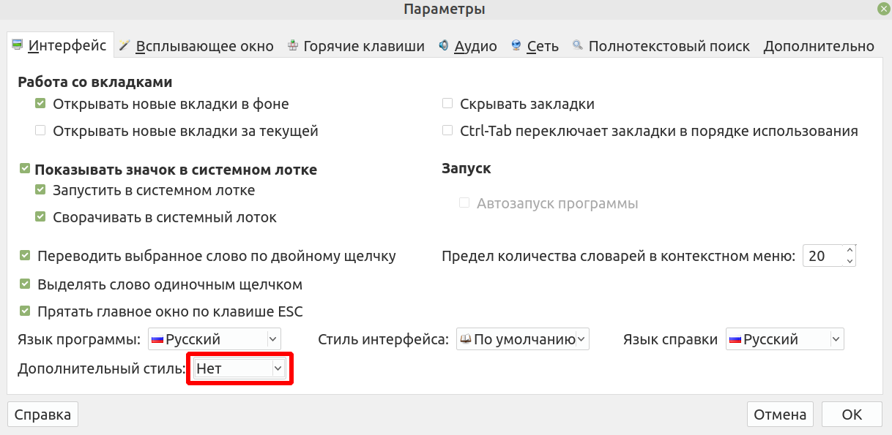

Настройка расширенных функций в GoldenDict
Ctrl + клик для открытия слова в новой вкладке
Клик на любом слове откроет его в той же вкладке. Ctrl + клик на любом слове откроет его в новой вкладке, позволяя вам просматривать несколько слов одновременно.

Добавление других словарей
Чтобы добавить больше словарей в GoldenDict, просто загрузите любой словарь в формате, совместимом с GoldenDict (Stardict, Babylon, Lingoes и т. д.) и добавьте эту папку в папку GoldenDict Documents/GoldenDict.
Существует множество палийских словарей для GoldenDict или MDict. Среди них Критический Пали Словарь и Объединенный Словарь Симсапа, который содержит PTS, DPPN и NCPED и другие. Скопируйте их в папку GoldenDict и пересканируйте словарь.
Поиск на странице
Чтобы найти определенное слово на странице, используйте сочетание клавиш Ctrl-F, или перейдите в Меню > Поиск > Поиск на странице.
Это откроет диалоговое окно, позволяющее быстро найти конкретное слово, которое вы ищете на странице.

Создание групп
Когда у вас установлено несколько словарей, охватывающих разные языки, рекомендуется создавать группы.
Перейдите в Меню > Правка > Словари (Клавиша F3) и перейдите на вкладку Группы. Создайте новую группу и перетащите словари в группу.

Теперь группа будет отображаться в выпадающем списке на главной странице.

Это помогает ограничить результаты поиска, что важно для полнотекстовых поисков.
Полнотекстовый поиск
Обычный поиск ищет только заголовки, но полнотекстовый поиск анализирует всё содержимое каждой статьи.
Сначала выберите группу, в которой хотите искать, иначе вы получите слишком много результатов.
Затем откройте Меню > Поиск > Полнотекстовый поиск (сочетание клавиш Ctrl+Shift+F).

Это откроет диалоговое окно.
Выберите режим, который хотите использовать:
- Слова точно находит целые слова (должны содержать 4 или более букв)
- Простой текст находит любую часть слова (должны содержать 4 или более букв)
- Шаблоны похож на простой текст с использованием масок, например, *
- Регулярные выражения позволяют выполнять очень точный поиск с использованием регулярных выражений.

Вы также можете вводить несколько слов, и они будут найдены, даже если они не находятся рядом друг с другом.
Другие опции:
- При поиске нескольких слов, опция Промежуточных слов, не более (0-15) ограничивает расстояние между словами.
- Опция Статей на словарь не более (1-10000) ограничивает количество результатов на словарь.
- Игнорировать порядок слов делает именно это. Оставьте этот флажок установленным.
- Игнорировать диакритику тоже говорит само за себя, например поиск sanna покажет saññā в числе других результатов.

Тёмный режим
Вы можете установить тёмный режим для GoldenDict, следуя инструкциям здесь. И после установки активируйте его в разделе Меню > Параметры > Интерфейс > Дополнительный стиль.

Пока вы этим занимаетесь, установите расширение Dark Reader для Chrome для комфортного чтения Пали даже когда глаза устали. Также существует и для других веб-браузеров.